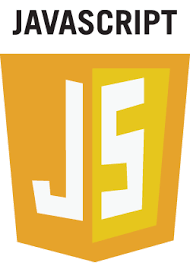

Kotlin Primer
How to live on the bleeding edge without cutting yourself
Adam Ruka
May 2016
Disclaimer
In this talk I might inadvertently insult your favorite programming language.
Please don't take it too seriously, and know that I like all of the languages mentioned in the talk (including Java!).
What is Kotlin?


Timeline
- July 2010 - start of the project
- July 2011 - public announcement
- February 2012 - JetBrains open sources the project
- February 15 2016 - 1.0 released
Let's talk about Java
"Java is not a perfect programming language"
Java's imperfections
Verbosity
VeryLongClassName veryLongClassName = new VeryLongClassName();
@Test
public void thisIsMyTest() throws Exception {
Java's imperfections
Boilerplate
public final class Person {
private final String name;
private final int age;
// 1. (Public) Constructor
// 2. Two getters
// 3. toString
// 4. equals
// 5. hashCode
Java's imperfections
Generics
<X extends String> X getString();
<X extends CharSequence> X getCharSequence();
Integer i = getString(); // fails to compile, makes sense
Integer j = getCharSequence(); // compiles!
Java's imperfections
Legacy baggage
List rawList = new ArrayList();
String[] stringArray = {"a", "b"};
Object[] objectArray = stringArray;
Let's talk about Scala
"Scala is more than a perfect programming language"
Scala's goals
- combine the functional and object-oriented paradigms
- enable higher degrees of safety through a powerful type system
- allow the language itself to be extended through operators, implicits and macros
- be a testbed of programming language research (Dotty)
Scala's shortcomings
XML literals
scala> val hello = Hello, world
hello: scala.xml.Elem = Hello, world
Scala's shortcomings
Complicated syntax
seq foreach println
seq.foreach{println}
seq.foreach(println)
seq.foreach{println(_)}
seq.foreach(println(_))
seq.foreach(x => println(x))
seq.foreach(x: Int => println(x))
seq foreach{x: Int => println(x)}
seq.foreach{x: Int => println(x)}
seq foreach{case x => println(x)}
seq.foreach{case x => println(x)}
seq foreach{case x: Int => println(x)}
seq.foreach{case x: Int => println(x)}
© Tomasz Nurkiewicz 2014
Scala's shortcomings
Complicated language
import scalaz._
import scalaz.std.list._
import scalaz.syntax.monad._
import scalaz.syntax.monoid._
import scalaz.syntax.traverse.{ToFunctorOps => _, _}
class Foo[F[+_] : Monad, A, B](val execute: Foo.Request[A] => F[B],
val joins: Foo.Request[A] => B => List[Foo.Request[A]])
(implicit J: Foo.Join[A, B]) {
def bar: Foo[({type l[+a]=WriterT[F, Log[A, B], a]})#l, A, B] = {
type TraceW[FF[+_], +AA] = WriterT[FF, Log[A, B], AA]
def execute(request: Request[A]): WriterT[F, Log[A, B], B] =
self.execute(request).liftM[TraceW] :++>>
(repr => List(request -> request.response(
repr, self.joins(request)(repr))))
© Jim Plush 2015
Kotlin's goals
- improve on Java's major pain points
- keep the language small and accessible
- fast compilation times
- small runtime
- great Java interop (both ways)
Syntax
public class Person(nameParam: String, val age: Int) {
private val name = nameParam
constructor(nameParam: String) : this(nameParam, -1)
init {
if (nameParam.isEmpty())
throw IllegalArgumentException("Name can't be empty!")
}
fun getName(): String {
//return nameParam; // would not compile
return name
}
override fun hashCode() =
if (age == -1) -2 else name.hashCode() + age
}
Syntax
object Collections : Utils() {
fun sort(col: Collection<Int>): Unit {
//...
fun <T> map(col: Collection<T>, op: (T) -> T): Collection<T> {
//...
}
fun increment(col: Collection<Int> = emptyList()) =
map(col, { i -> i + 1 })
fun double(col: Collection<Int>) =
map(col = col) { it * 2 }
}
}
Null safety
//var str: String = null // does not compile!
var str: String = "str"
val maybeStr: String?
maybeStr = null
//str = maybeStr // does not compile!
// maybeStr.length // does not compile!
val maybeLenght: Int? = maybeStr?.substring(1, 2)?.length
val len: Int = maybeStr!!.length // ride the lightning
str = maybeStr ?: ""
val javaStr: String? = java.lang.Object().toString()
Value classes
data class Person(val name: String, val age: Int)
// 1. equals(), hashCode()
// 2. toString()
// 3. getters
// 4. copy()
// 5. destructuring declarations:
val (name, age) = Person("Adam", 22)
Flow-aware typing
val obj: Any = "str"
if (obj is String) {
obj.substring(1, 2)
}
Algebraic Data Types
sealed class Expr {
class Const(val number: Double) : Expr()
class Sum(val e1: Expr, val e2: Expr) : Expr()
object NotANumber : Expr()
}
Pattern Matching
fun eval(expr: Expr): Double = when (expr) {
is Expr.Const -> expr.number
is Expr.Sum -> eval(expr.e1) + eval(expr.e2)
Expr.NotANumber -> Double.NaN
// the `else` clause is not required
// because we've covered all the cases
}
Extension Methods
fun MutableList<Int>.swap(index1: Int, index2: Int) {
val tmp = this[index1] // 'this' corresponds to the list
this[index1] = this[index2]
this[index2] = tmp
}
val list = mutableListOf(1, 2, 3)
list.swap(0, 2)
Operator Overloading
class IntVector {
operator fun plus(other: IntVector): IntVector = //...
operator fun get(i: Int, j: Int) = //...
}
val v1 = IntVector()
val v2 = IntVector()
v1 + v2
v1[1, 2]
Type-safe builders
fun result(args: Array<String>) =
html {
head {
title {+"XML encoding with Kotlin"}
}
body {
h1 {+"XML encoding with Kotlin"}
a(href = "http://kotlinlang.org") {+"Kotlin"}
p {
+"This is some"
b {+"mixed"}
+ "text. For more see the"
a(href = "http://kotlinlang.org") {+"Kotlin"}
+"project"
}
p {
for (arg in args)
+arg
}
}
}
Automatic Delegation
interface Delegate {
//...
}
class Proxy(delegate: Delegate) : Delegate by delegate
Function awesomeness
package com.my.company;
fun main(args: Array<String>) {
println("Hello World!")
}
fun sum(list: List<Int>): Int {
fun sum(list: List<Int>, total: Int): Int =
if (list.isEmpty()) total
else sum(list.drop(1), total + list.first())
return sum(list, 0)
}
Strings awesomeness
"""
this is a raw string
| !!!!""".trimMargin()
// String interpolation
data class Person(val name: String, val age: Int) {
fun sign() {
println("I, $name, aged ${this.age}, hereby declare...")
}
}
That's all I had!
I've barely scratched the surface
For more, visit kotlinlang.org
Thanks for coming
Questions?